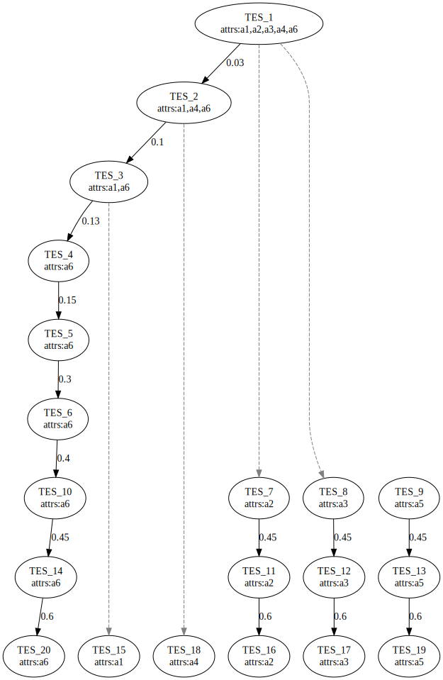

Getting started
2022-04-15
diffeRenTES_vignette.RmdWhat is diffeRenTES?
diffeRenTES is a small package written in R that focuses primarily on the computation of the tree-like structure describing the cell differentiation process following the mathematical model firstly described in the work (Villani, Barbieri, and Serra 2011).
How can you install it?
To install the latest development version of diffeRenTES directly from GitHub use:
library(devtools)
devtools::install_github("mbraccini/diffeRenTES")How can it be used?
For example purposes a random Boolean network using the BoolNet R package is generated. In real world application any Boolean network can be generated or loaded (e.g., by using the loadNetwork method of the BoolNet package), as long as it is stored in an object of class BooleanNetwork.
net <- BoolNet::generateRandomNKNetwork(10, 2)
attractors <- BoolNet::getAttractors(net)
# Attractors Transition Matrix computation
ATM <- getATM(net, attractors, MAX_STEPS_TO_FIND_ATTRACTORS = 100)
# ATM structure in matrix format.
# a1, a2, etc. refer to the attractors found.
print(ATM$ATM)
#> a1 a2 a3 a4 a5 a6
#> a1 0.30 0.0 0.00 0.1 0.00 0.60
#> a2 0.10 0.4 0.10 0.0 0.00 0.40
#> a3 0.10 0.1 0.40 0.0 0.00 0.40
#> a4 0.10 0.0 0.00 0.3 0.00 0.60
#> a5 0.15 0.0 0.00 0.0 0.45 0.40
#> a6 0.13 0.0 0.03 0.0 0.00 0.83
# No. perturbations that have not reach another attractor within the provided MAX_STEPS_TO_FIND_ATTRACTORS
print(ATM$lostFLips)
#> [1] 0Then, the Threshold Ergodic Sets (TESs) are computed, which, remember, represent the different cell types in this model.
#TESs computation
TESs <- getTESs(ATM)
#Retrieve the computed TESs
print(TESs$TES)
#> $level_0
#> $level_0$TES_1
#> [1] "a1" "a2" "a3" "a4" "a6"
#>
#>
#> $level_1
#> $level_1$TES_2
#> [1] "a1" "a4" "a6"
#>
#>
#> $level_2
#> $level_2$TES_3
#> [1] "a1" "a6"
#>
#>
#> $level_3
#> $level_3$TES_4
#> [1] "a6"
#>
#>
#> $level_4
#> $level_4$TES_5
#> [1] "a6"
#>
#>
#> $level_5
#> $level_5$TES_6
#> [1] "a6"
#>
#>
#> $level_6
#> $level_6$TES_7
#> [1] "a2"
#>
#> $level_6$TES_8
#> [1] "a3"
#>
#> $level_6$TES_9
#> [1] "a5"
#>
#> $level_6$TES_10
#> [1] "a6"
#>
#>
#> $level_7
#> $level_7$TES_11
#> [1] "a2"
#>
#> $level_7$TES_12
#> [1] "a3"
#>
#> $level_7$TES_13
#> [1] "a5"
#>
#> $level_7$TES_14
#> [1] "a6"
#>
#>
#> $level_8
#> $level_8$TES_15
#> [1] "a1"
#>
#> $level_8$TES_16
#> [1] "a2"
#>
#> $level_8$TES_17
#> [1] "a3"
#>
#> $level_8$TES_18
#> [1] "a4"
#>
#> $level_8$TES_19
#> [1] "a5"
#>
#> $level_8$TES_20
#> [1] "a6"
#>
#>
#> $level_9
#> $level_9$TES_21
#> [1] "a1"
#>
#> $level_9$TES_22
#> [1] "a2"
#>
#> $level_9$TES_23
#> [1] "a3"
#>
#> $level_9$TES_24
#> [1] "a4"
#>
#> $level_9$TES_25
#> [1] "a5"
#>
#> $level_9$TES_26
#> [1] "a6"
#And the noise thresholds at which they emerge.
print(TESs$thresholds)
#> [1] 0.00 0.03 0.10 0.13 0.15 0.30 0.40 0.45 0.60 0.83Lastly, the following code saves the image of the computed differentiation tree to the file system.
# Saving the TES-based differentiation tree into a file
saveDifferentiationTreeToFile(TESs, "exampleTree") The resulting differentiation tree is presented. It reports the various TESs with the attractors of which they are composed and the differentiation process emerging from the reduction of intra-cellular noise, synthesized by the thresholds present in the direct arcs. 
References
Villani, Marco, Alessia Barbieri, and Roberto Serra. 2011. “A Dynamical Model of Genetic Networks for Cell Differentiation.” PLOS ONE 6 (3): 1–9. https://doi.org/10.1371/journal.pone.0017703.